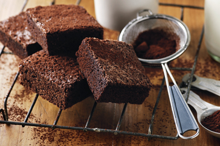

Page 8

Chocolate Brownies
Preparation Time
10 minutes
Cooking Time
35 minutes
Ingredients (serves 10)
250g butter
430g (2 cups) caster sugar
4 eggs
225g (1 1/2 cups) plain flour
80g (3/4 cup) cocoa powder
1 tsp vanilla essence
Cocoa powder, extra, to dust
Method
Preheat oven to 180ºC. Line a 20 x 30cm (base measurement) slab pan with non-stick baking paper.
Melt the butter in a saucepan over medium heat. Remove from heat. Stir in the sugar. Add the eggs, 1 at a time, and stir until mixture is thick and glossy.
Sift the flour and cocoa powder over the egg mixture and stir until well combined. Stir in the vanilla. Spread over the base of the prepared pan.
Bake for 30 minutes or until a skewer inserted into the centre comes out clean. Set aside in the pan to cool completely. Cut into pieces and dust with cocoa powder.